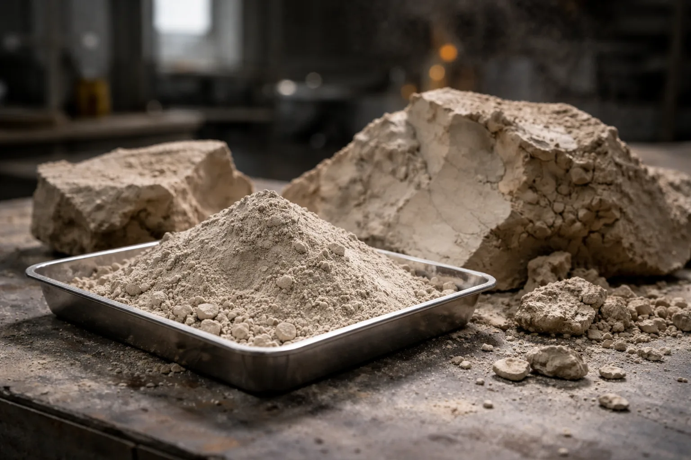

Clays
Clay-rich materials can support calcined SCM routes, activated binder systems, filler strategies, ceramic products, or blended low-cement formulations. The right route depends on mineralogy, impurity profile, available processing, and the target performance level.
Key route-shaping factors and likely commercial role for this feedstock group.
Where they fit well
- Calcined SCM and low-clinker substitution strategies
- Alkali-activated and hybrid binder systems
- Ceramic or thermally processed products where firing already exists
What usually decides the route
- Clay mineral assemblage and quartz dilution
- Whether calcination, classification, or blending is realistic
- Regional availability and price pressure on cement replacement
Commercial role
Strong candidate for scalable regional SCM supply and tailored low-carbon binder development.